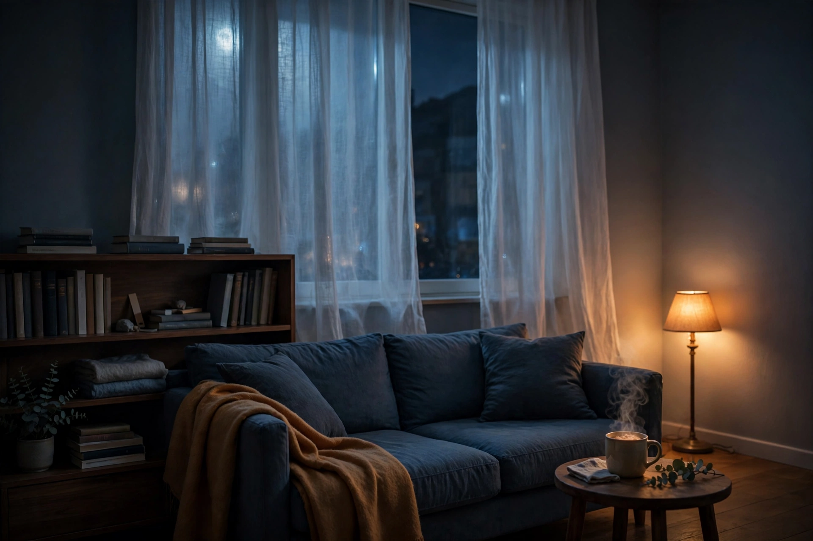

📊 Hzの目安
住環境によって異なりますが、足音（重量衝撃音）は、一般的に40～1000Hz程度の中低音域が中心とされています。裸足やスリッパ、床の材質、建物の構造によって、聞こえる帯域は変わります。上の階の足音の動画は、この帯域に合わせたブラウンノイズです。
20Hz40～1000Hz5000Hz
下限が40Hzあたりと低いのは、ドスンという衝撃の成分が低い音に多いためです。ただし、スマートフォンのスピーカーのような小さな再生機器では、この低い帯域そのものが出にくいという制約があります（詳しくは「効かせるための使い方」）。
この記事の要点
- 「ドスン」という足音は重量衝撃音と呼ばれ、床や柱を伝わって届くため、耳栓や壁の防音だけでは防ぎにくい音です。
- 足音は、40～1000Hzくらいの低い音が中心の目安です。
- マスキング音は、音量を控えめにして、足音が少し紛れるくらいから試します。
- 建物の構造によって響き方は変わります。木造・軽量鉄骨では特に伝わりやすく、RC造でも重量衝撃音は伝わります。
- 効きにくいと感じたら、音量・置き場所・再生機器・帯域の見直しと、耳栓の併用を順に試します。
- 音を消すものではありません。トラブルは、管理会社への相談が無難です。
⏱ 急いでいる人へ ― 今夜やること3つ
📖 目次
🔊 足音の正体 ― 2種類の衝撃音
床に物が当たる音は、大きく2種類に分けられます。自分の気になっている音がどちらかで、対策の効き方が変わります。
| 重量衝撃音 | 軽量衝撃音 | |
|---|---|---|
| どんな音か | ドスン、ドタドタという、重くて低い音 | コツン、カランという、軽くて高い音 |
| 例 | 歩く・走る足音、飛び跳ね、重い物の落下 | 椅子を引く音、物を落とす音、スリッパのパタパタ |
| 伝わり方 | 床や柱などの躯体を振動として伝わる | おもに空気と床表面を伝わる |
| 防ぎにくさ | 耳栓・壁材では防ぎにくい。振動として体にも感じる | カーペットやフェルトなど、発生側の工夫が効きやすい |
この記事で扱う「上階の足音」は、おもに重量衝撃音のほうです。躯体を伝わる振動なので、発生源から離れた部屋にも届き、耳栓をしても骨や体を伝わって感じ取ってしまうことがあります。「音を遮る」発想だけでは限界があるため、別の音に紛れさせるマスキングが現実的な選択肢になります。
👣 なぜ気になるのか
上の階の足音は、ドスンとした中低音で、静かな夜ほど目立ちます。住んでいる建物の床や構造、生活の時間帯によって、聞こえ方は変わります。感じ方は人によって違います。
気になり方を強くする要素は、主に3つあります。
- 周りが静かすぎること ― 夜間は部屋の中の暗騒音（もともとある小さな音）が下がるため、同じ足音でも落差が大きくなり、際立って聞こえます。昼間は気にならない音が、夜だけ気になるのはこのためです
- 予測できないこと ― 一定のリズムで続く音より、「次にいつ鳴るか分からない」音に、耳は注意を向け続けます。鳴るたびに身構える状態が続くと、実際の音量以上に疲れます
- 振動として感じること ― 重量衝撃音は、耳だけでなく体でも感じます。「聞こえる」というより「響く」と表現する人が多いのはそのためで、音だけを塞ぐ耳栓では消しきれません
🏢 建物の構造で変わる聞こえ方
同じ足音でも、建物の構造によって響き方は大きく変わります。一般的な傾向として：
- 木造・軽量鉄骨造 ― 床や壁が軽い分、足音が伝わりやすく、響きやすい傾向があります。アパートに多い構造です
- 鉄筋コンクリート造（RC造） ― 話し声などの空気音は伝わりにくい一方、ドスンという重量衝撃音はコンクリートを伝わって届くため、RC造でも足音が気になることは珍しくありません。「マンションなのに響く」のは、構造の欠陥とは限りません
- 床の仕上げ ― フローリング直貼りか、二重床か、カーペットの有無でも変わります。上の階の床材までは分からないことが多いので、「構造で傾向を知り、帯域は目安として試す」のが現実的です
床の遮音性能の目安（L等級）
床衝撃音の遮音性能は「L等級」という数字で表されることがあり、数字が小さいほど遮音性能が高いことを示します。重量衝撃音についてはLHという区分が使われます。一般的な目安として、LH-50程度では「上階の生活音が聞こえる」レベル、LH-40程度では「ほとんど気にならない」レベルと説明されることが多いです。ただし、これは測定条件のもとでの目安で、実際の聞こえ方は家具の配置や生活の仕方でも変わります。物件選びの参考にはなりますが、今の住まいの悩みをこの数字だけで判断することはできません。
以上は一般的な傾向の説明です。個別の建物の性能を保証したり、劣っていると判断したりするものではありません。
🎧 マスキング音の選び方
このサイトでは、足音の帯域に合わせた、低音域～中音域のブラウンノイズを用意しています。音量は控えめにして、足音が少し紛れるくらいから試してみてください。大きすぎる音は、かえって気になってしまいます。
ブラウンノイズとピンクノイズの違い
ノイズには「色」の呼び名があります。ブラウンノイズは低い音ほど強い、こもった音で、足音のような中低音のマスキングに向きます。ピンクノイズはブラウンより高めの帯域まで含む、雨音に近いさらさらした音で、話し声などのマスキングによく使われます。どちらが正解ということはなく、気になる音の帯域に近いほうを選ぶのが基本です。詳しくはマスキング音の仕組みにまとめています。
雨音ミックス版について
雨音と重ねたミックス版もあります。自然音が混ざる分、帯域の純度はノイズだけの版より下がりますが、ノイズだけの音が苦手な方には聴きやすい場合があります。「効き目の強さ」より「一晩流し続けられる心地よさ」で選ぶのも大切な基準です。
🎛 効かせるための使い方
同じ音源でも、使い方で効き方は変わります。ポイントは「音量を上げる」より前に試せることばかりです。
スピーカーの置き場所
基本は枕元など、耳に近い場所です。耳の近くで小さな音を流すほうが、部屋の遠くから大きな音を流すより、少ない音量で足音を紛らせることができます。壁際や部屋の隅に置くと低音が強調されて響くことがあるので、こもって感じる場合は少し離してみてください。
音量の決め方
- まず、足音が「聞こえるけれど、少し紛れてきた」と感じる最小の音量を探します
- その音量から、ほんの少しだけ下げます。「完全に消す」音量まで上げると、マスキング音そのものが気になって眠れなくなります
- 夜中に目覚めたときに気になる場合は、スリープタイマーで切るのではなく、朝まで流しっぱなしのほうが再入眠しやすいことがあります
再生機器の注意
スマートフォン本体のスピーカーは、構造上、低い音を出すのが苦手です。40～1000Hzのうち肝心の低い部分が出ていないと、「効かない」という結果になりがちです。うまくいかないときは、小さくても低音の出る外部スピーカーや、イヤホンで試してみてください。就寝中のイヤホンは、コードの巻き付きや耳への負担に注意し、耳栓型でない開放型や、就寝用をうたう製品を選ぶなど、安全面を優先してください。骨伝導タイプは耳を塞がないため、マスキング音と足音の両方が聞こえる形になり、用途によっては相性が分かれます。
🔁 効きにくいと感じたら
マスキングは相性のある方法です。「効かない」と感じたら、諦める前に次の順で見直してみてください。
- スピーカーの位置と再生機器 ― 枕元に寄せる、低音の出る機器に変える。この2つで変わることが一番多いです
- 別の帯域・別の音を試す ― 雨音ミックス版など、音の種類を変えると合うことがあります。帯域の数字は目安なので、合うかどうかは試して決まります
- 耳栓と併用する ― 耳栓で足音の輪郭を少し弱めてから、マスキング音で紛れさせる組み合わせです。重量衝撃音の振動成分までは消えませんが、音の成分が減るだけでも変わります（耳栓とマスキング音の併用）
- それでも生活に支障があるとき ― 我慢を続けるより、記録を付けて管理会社に相談する段階です。感情ではなく記録が相談を前に進めます（騒音の記録シート／対処のフローチャート）
📏 自分の部屋の音を測ってみる
「どのくらい響いているか」を目安として知りたいときは、ブラウザで使えるWeb版の測定器があります。足音が鳴った瞬間のレベルを見ると、時間帯による違いもつかみやすくなります。相談の際は、数値そのものより「いつ、どのくらいの頻度で」という記録のほうが効きます。
スマートフォンのマイクは低い音を拾いにくいため、足音のような中低音は実際より小さく表示される傾向があります。数値は目安として使い、相談の記録には日時や頻度と合わせて残すのがおすすめです（騒音測定アプリの使い方と限界）。
🚫 やってはいけないこと
❓ よくある質問
- Q. RC造のマンションなのに、なぜ足音が響くのですか？
- A. RC造が遮りやすいのは、おもに話し声のような空気音です。ドスンという重量衝撃音は、コンクリートの躯体そのものを伝わって届くため、RC造でも聞こえます。建物の欠陥とは限りません。
- Q. 耳栓だけでは駄目なのですか？
- A. 耳栓は空気を伝わる音には効きますが、重量衝撃音は振動として体にも届くため、耳栓だけでは消しきれないことが多いです。マスキング音との併用で、音の成分を弱めてから紛れさせる方法があります。
- Q. マスキング音を一晩中流しても大丈夫ですか？
- A. 控えめな音量で使う分には、一般に問題は少ないとされますが、耳の健康についての判断はこのサイトではできません。目安として「翌朝、耳が疲れている・こもって感じる」ようなら音量を下げてください。心配な場合は耳鼻科への相談をご検討ください。
- Q. 上の階に子どもがいて、走る音がひどいです
- A. 子どもの走る音は、通常の歩行より強く、予測しにくい音です。マスキングで和らぐ場合もありますが、難しい音でもあります。詳しくは上階の子どもの走る音・赤ちゃんの泣き声をご覧ください。生活に支障が続く場合は、直接ではなく管理会社を通じた相談をおすすめします。
⚠️ 注意
この動画は、足音への対策を保証するものではありません。音そのものを消すものではなく、目立たなくするための音です。近隣とのトラブルについては、法律の判断が必要な場合があります。このサイトの内容は、法律の判断ではありません。